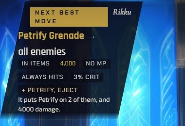
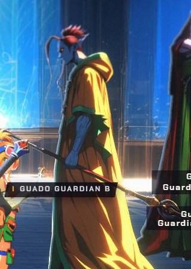
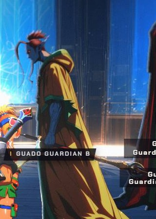
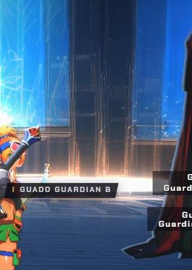
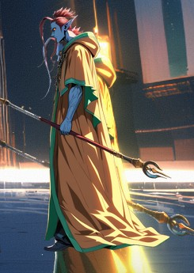
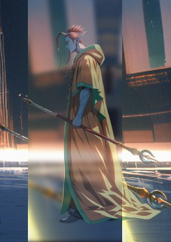
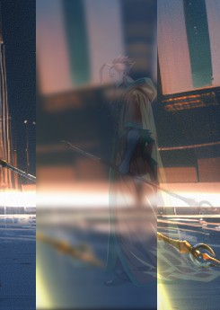

“Petrify … Fully landable — and this is the fight’s shortcut. Kimahri’s Stone Breath and Rikku’s Petrify Grenade both petrify, and a petrified monster always shatters. Shattering forfeits the overkill AP.”research ffx-seymour-anima-macalania §2.2 (verified, 2 sources)
Your D-046 said the Guardians yield when beaten (“Living Guado bodyguards. They lose.” presentation.md row 140). But the guide’s own hint and the move advisor tell the player to throw Petrify Grenade, which does not beat them the ordinary way: it petrifies them and they shatter (the engine’s eject). So D-046 did not decide what a petrified Guardian does.

“The Guardians have no Petrify resistance at all, and a petrified monster shatters — it forfeits the overkill AP and it ends them in one throw”src/data/guides/seymour-anima-macalania.ts, hint on Petrify Grenade / Stone Breath
Research §7 row 2 lists it as one of the fight’s intended strategies, and §10 as its lesson: a real trade-off, stated in numbers (a faster kill against the overkill AP).






Two outcomes, as in FFX: petrified, it shatters and is removed (grey flash, shatter sound, a small shake, a 0.6 s fade toward stone). Beaten normally, it yields, per D-046. The guide line stays true. No code change: both are in the code today (the yield is not in these e2e frames).
One exit for the Guardians whatever beat them: the stone Guardian (frame 1, greyed with a CSS filter here) steps back like a living one. Off-canon: FFX removes a petrified monster. The guide line (“shatters”) would then be wrong and would need rewording too. A presenter change.
Remove Petrify Grenade (and Stone Breath) from the guide hint and the move advisor, so the player is never pointed at the case. The case still exists: the preset still carries Petrify Grenades (research §8.9) and Items can still throw one, so C still needs A or B for that throw. It also removes one of the fight’s intended lessons (research §7 row 2, §10). A guide and advisor change.